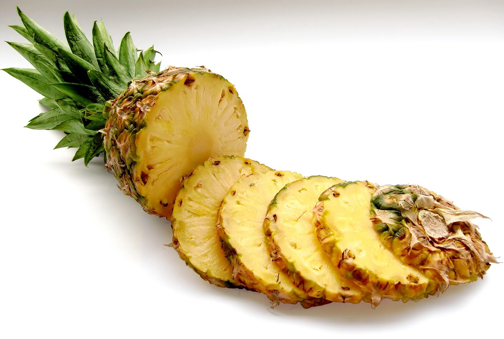
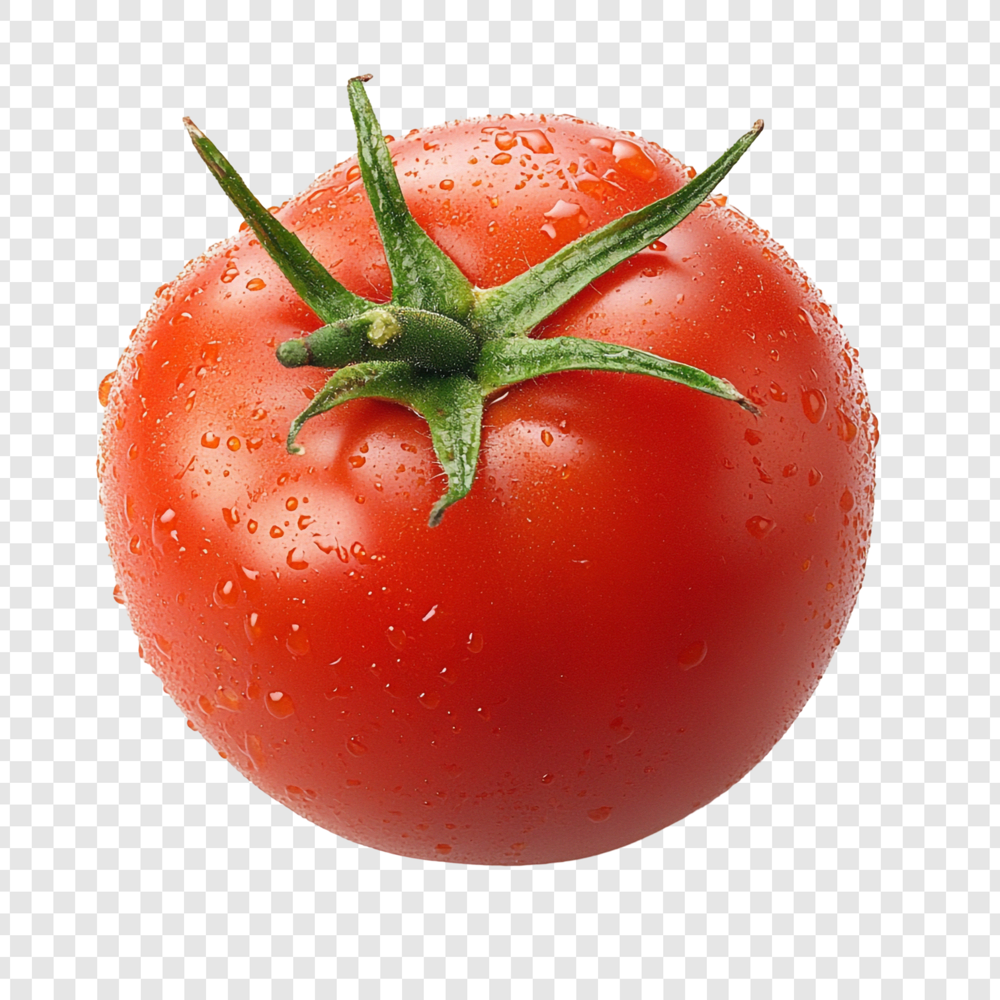

¡Bienvenido a tu mercado saludable!
Frutas Tropicales

Mango
Dulce y jugoso, ideal para jugos y postres.

Papaya
Refrescante y rica en antioxidantes.

Piña
Ácida y deliciosa, perfecta para jugos.
Frutas Cítricas

Naranja
Llena de vitamina C, perfecta para desayunos.

Limón
Ideal para aderezos y bebidas.

Mandarina
Dulce, práctica y muy nutritiva.
Hortalizas

Lechuga
Base de ensaladas frescas y ligeras.

Pepino
Hidratante y perfecto para ensaladas.

Tomate
Versátil, para salsas o crudo.
Tubérculos

Papa
Infaltable en cualquier cocina.

Camote
Rico en fibra y sabor.

Yuca
Ideal para frituras o sancochos.